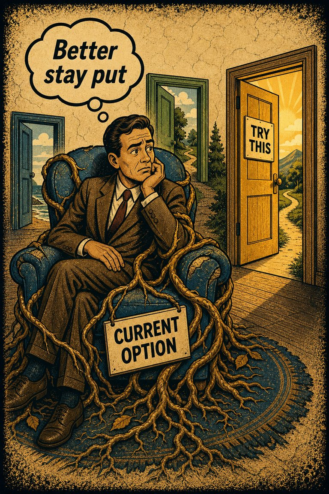
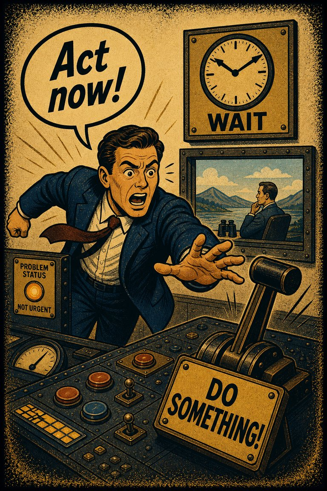
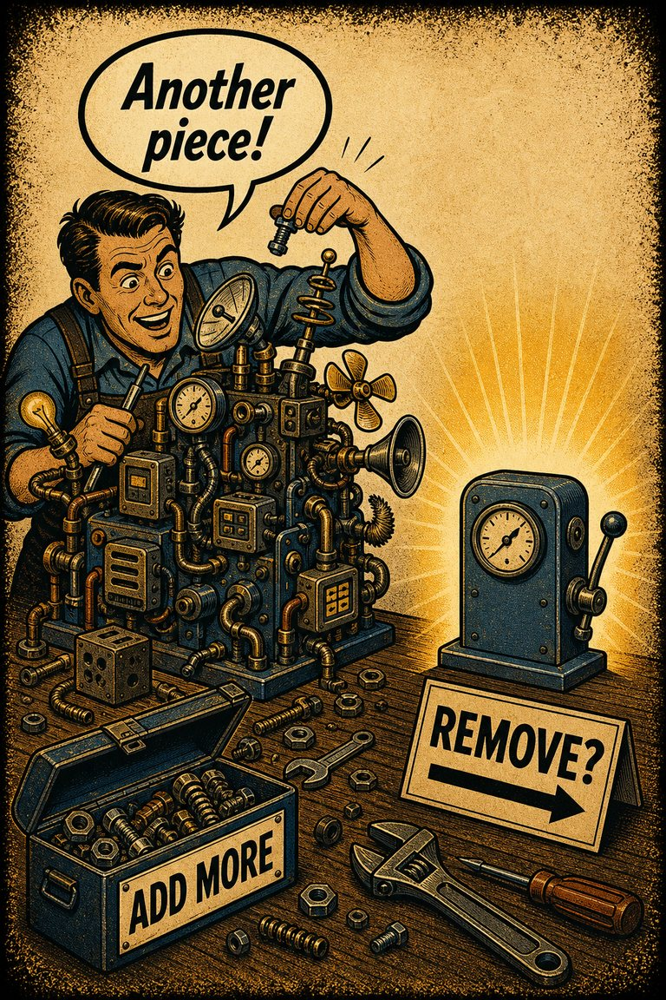
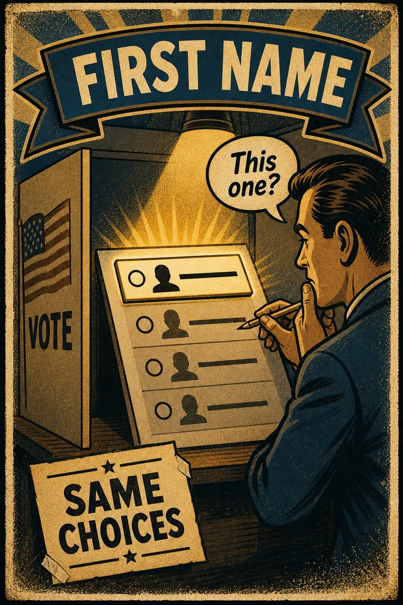

Common in live judgment
61
Especially important in safety, climate, public health, and crisis response.
Rare
Frequent

Cognitive Biases
A practical cognitive-bias site with clear definitions, learning paths, assessments, self-audits, and debiasing tools.
Cognitive Bias
The tendency to assume that things will keep functioning more or less normally, which leads people to underprepare for unprecedented or fast-moving disruption.
What it distorts
It bends risk response and preparation by making the absence of past disruption feel like evidence against future disruption.
Typical trigger
Disaster planning, institutional risk, infrastructure stress, health threats, financial shocks, and situations where acting early would be costly or embarrassing if the threat does not materialize.
First countermove
Ask what evidence would justify action before the disruption becomes undeniable, not after.
Coverage depth
Structured process
What threat am I treating as too unreal simply because it has not happened here before?
The recent past acts like a powerful baseline. When a threat departs from familiar patterns, people often preserve the old frame longer than the evidence deserves because normality is easier to imagine than rupture.
These are classroom-facing editorial estimates for comparing how the bias behaves in use. They are teaching aids, not measured statistics.
Common in live judgment
61
Especially important in safety, climate, public health, and crisis response.
Easy to spot from outside
54
Often obvious after the event, which can itself invite hindsight bias.
Easy to innocently commit
77
The ordinary baseline feels more real than the disruptive scenario.
Teaching difficulty
46
Needs distinction from sensible skepticism about panic.
This comparison makes the hidden pull easier to see before the technical label has to do all the work.
Biased move
This is like watching smoke gather in the hallway and deciding it probably means another ordinary kitchen mistake because a serious fire would feel too strange.
Clearer comparison
Familiar baselines help us function, but they can also slow recognition when the pattern really is breaking. Unusual does not mean impossible enough to ignore.
Do not use this label whenever caution about alarmism exists. False alarms are real. The issue is when the familiar baseline receives so much psychological privilege that emerging disaster evidence is discounted mainly for being abnormal.
Use this label when people underreact to serious warning signs because the disruptive scenario feels too unlike ordinary life to take fully on board.
Use the quick check, caveat, and nearby confusions together. The fastest diagnosis is often the noisiest one.
Each example changes the surface context while keeping the same hidden distortion in place.
A household delays practical preparation because a serious disruption still feels too unreal compared with ordinary routines.
An organization underreacts to an emerging risk because the current system has held together so far and early intervention looks premature.
Communities keep behaving as though conditions are normal long after warning signs suggest that waiting will make the eventual response costlier.
Preparation can seem alarmist because the familiar baseline still feels more real than the unusual threat scenario.
Teaching note: This page helps CogBias address preparedness, risk communication, and institutional underreaction without reducing everything to simple optimism.
The strongest debiasing moves change the process, not just the label.
Define a few concrete tripwires that would trigger preparation before the situation feels undeniable.
Run scenario exercises that make low-frequency disruption cognitively legible before the real event arrives.
Build preparedness thresholds around leading indicators rather than around whether the disruption already feels normal to respond to.
Practice And Repair
Normalcy bias protects continuity. The familiar world keeps feeling more solid than the warning signs pointing toward a break in that world, which slows both preparation and reaction.
Warning signs point toward a rare, disruptive, or unprecedented event.
The normal baseline still feels more real and more representative than the unusual scenario.
Preparation and response lag because the extraordinary threat never fully becomes cognitively real in time.
Run the warning signs through a precommitted escalation rule instead of asking how normal the threat feels in the moment.
What action threshold would I want in place if I knew this abnormal scenario were the one unfolding?
Spot It
Slow It
Reframe It
These are nearby labels that can share the same outer appearance while differing in what actually drives the distortion. Use the overlap, the distinction, and the diagnostic question together before settling the call.
Why compare it: Optimism bias expects favorable outcomes broadly; normalcy bias specifically expects continuity with the familiar baseline.
Why compare it: Status quo bias prefers the current arrangement; normalcy bias assumes the surrounding world itself will keep resembling the current arrangement.
Why compare it: Omission bias favors inaction because it feels cleaner; normalcy bias favors inaction because disruption still feels too unreal to prioritize.
These are useful when the label seems roughly right but the process change still feels underspecified.
What am I treating as impossible mainly because it has not happened here before?
Which preparations would still be sensible even if the worst case did not arrive?
Am I requiring too much certainty before allowing the disruption scenario to count?
These sourced cases do not prove what was in someone's head with perfect certainty. They are teaching cases for showing where the bias pressure becomes visible in practice.
Disaster underreaction and evacuation delay
Normalcy bias is often used to explain why people delay evacuation or preparation when early warning signs still feel too inconsistent with ordinary life to take fully seriously.
Why it fits: The familiar baseline keeps outranking the disturbing evidence until the cost of delay has already grown.
Wikipedia · Modern disaster research
Residents wait for one more confirming sign before leaving
People often delay preparation or evacuation because each early warning can still be interpreted as consistent with ordinary life, so action gets postponed until the window is worse.
Why it fits: The normal baseline keeps winning successive rounds of interpretation.
Wikipedia · Modern disaster research
Disaster warnings normalized before action
Disaster-warning research shows that people often reinterpret warnings through familiar routines and prior expectations before treating them as urgent.
Why it fits: The ordinary frame keeps absorbing evidence that the situation is no longer ordinary.
Social Problems · 1992
Use these sources to move from the teaching page into the underlying literature and seed reference material. The site is still written for clarity first, but the stronger pages should also be traceable.
A strong disaster-warning source for how people normalize risk information before acting on it.
Seed taxonomy and broad coverage are drawn from Wikipedia's List of cognitive biases, then editorially reshaped into a teaching-first reference.
Once you know the bias, these nearby tools help you use the page in a real workflow rather than as a static definition.
Curated sequences where this bias commonly appears alongside a few predictable neighbors.
Short audits you can run before the distortion hardens into a decision, a verdict, or a post-hoc story.
Bias-aware AI prompts that widen the frame instead of simply endorsing the first preferred conclusion.
A mixed scenario set that can quietly pull this bias into the question bank without announcing the answer in the title first.
These links widen the frame around the bias without interrupting the core lesson on this page.
A theory article on how ambiguity, vivid possibility, and normal baselines can distort risk judgment before explicit calculation ever gets a fair chance.
CogBias theory
These neighbors were selected from shared categories, shared patterns, and explicit editorial links where available.
The tendency to overestimate favorable outcomes and underestimate the probability or impact of unfavorable ones, especially for oneself or one's own plans.

The tendency to prefer the current option, default, or inherited arrangement simply because it is the current option, default, or inherited arrangement.
The tendency to judge harmful inaction as more acceptable, or less blameworthy, than equally harmful action.

The tendency for someone to act when faced with a problem even when inaction would be more effective, or to act when no evident problem exists

The tendency to solve problems through addition, even when subtraction is a better approach

Where candidates who are listed first often receive a small but statistically significant increase in votes compared to those listed in lower positions